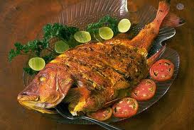
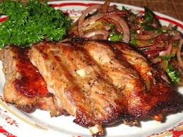
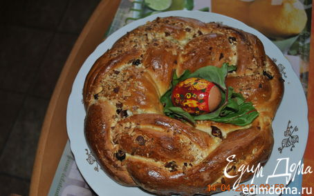
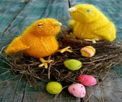
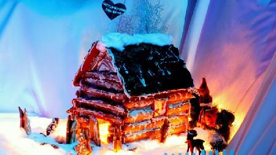

Рыбные блюда. Рыбы, ракообразные и морепродукты составляют основной рацион норвежской кухни. Существует масса рецептов приготовления рыбы. Очень популярны в Норвегии сельдь, лосось и, конечно же, треска. Из трески готовят рыбные щи, пироги, супы, основные блюда, закуски – в каждом блюде используется треска. Валяная и копченая рыба – самые популярные способы ее приготовления.
Мясные блюда В Норвегии, кроме рыбы, широко употребляются и мясные продукты. Наиболее популярны жареные свиные ребрышки, жареные бараньи и овечьи головы, которые называются "смалховт". Не менее популярен традиционный "форикол" - ягненок, сваренный с тушеной капустой, а затем запеченный вместе с ней под коричневым мучным соусом. Это лосятина и оленина во всех видах, блюда из мяса диких животных и птиц, обычно с гарнирами из различных бобовых, капусты и каш. Из баранины готовят соленый овечий окорок "феналар", различные стейки и бифштексы, тушат баранину с капустой и зеленью, подавая с гарниром из различных круп. Популярна снежная куропатка "рип", говяжьи биточки "хьетболлер" под соусом и мясные похлебки с зеленью- всего и не перечислить. Обычно в качестве гарнира к мясу подают блюда из картофеля.
Выпечка К норвежским кулинарным традициям относится выпечка домашнего пирога и хлеба, поэтому домашние кондитерские в Норвегии пользуются большей популярностью. Большую популярность имеют картофельные хлебцы "лефсе", хрустящий хлеб "кнеккбред" из тонкого теста, напоминающий лаваш, а также его уменьшенный вариант - "флатбред". Очень много видов десертной традиционной выпечки – это кексы, булочки, яблочная запеканка с сухарями и сметаной "тислерт бондепикер", фруктовое суфле "фромаш", мусс из яичных белков, взбитых с лесными ягодами и сахаром - "троллькрем", торт с кремом "блёткаке", хлебцы с медом, вафли , картофельные блины "ломперс" и традиционные блины "свелле".
Напитки В Норвегии кофе считается излюбленным напитком. Норвежцы его пьют в любое время суток и в огромных количествах. Широко употребляются травяные настойки и чаи, компот из яблок с медом, отвары из фруктов. Из алкогольных напитков наиболее распространено пиво "Rignes", виски, водка, джин и различные ликер. Традиционными спиртными напитками Норвегии считается "акевит" – это самогон из картофеля с тмином, выдержанный в деревянных бочках, который принято пить слегка подогретым, и грог( «глегг»), который варится из красного вина с кардамоном, гвоздикой, изюмом и миндалем. Грог считается «зимним» напитком, его пьют обычно после лыжных прогулок с имбирным печеньем. Молоко и молочные напитки играют огромную роль в жизни норвежцев. Их потребление здесь на душу населения самое большое всех в мире. Всевозможные молочные продукты употребляются повсеместно и в огромном количестве. Козий сыр с шоколадом – специфический продукт, который обычно употребляют на завтрак.
Пасхальная кухня в Норвегии. Главным атрибутом Пасхи, как и во многих странах мира, в Норвегии остаются крашеные яйца. Яйца непременно подаются на праздничный стол, а также используются для украшения дома и в качестве многочисленных сувениров. Сувенирные яйца делают деревянными, металлическими, бумажными и т.д. Они расписаны узорами, обвернуты золотой бумагой или фольгой. В них кладут небольшие подарки или лакомства для родственников и друзей - марципан, сушёные фрукты, алые сердечки, любовные записки, духи, монетки и другие приятные мелочи.
Рождественская кухня в Норвегии Если Вы празднуете рождество в Норвегии, скорее всего вам предложат одно из этих блюд: Рождественские ребрышки, шашлык из бараньих ребрышек с картофелем, лютефиск - особым образом приготовленная треска, имеющую весьма специфический вкус. Лютефиск является главным традиционным блюдом новогоднего стола. Одно из основных мероприятий для норвежцев перед Рождеством – это рождественская выпечка. В Норвегии существует традиция выпекать сладкое печенье к Рождеству из семи различных видов. Выпечкой печенья часто занимается вся семья – как взрослые, так и дети. Детям особенно нравится готовить и украшать имбирные пряники и пряничные домики.